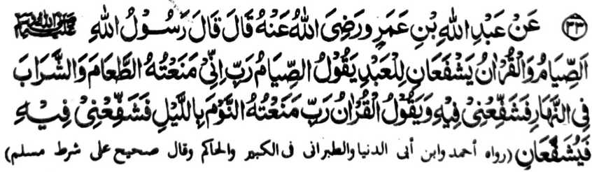
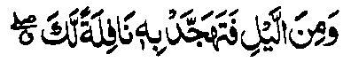
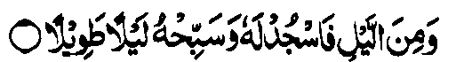
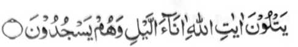
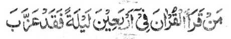

Miyakathitayan ko Abdullah ibn-e Amr (Radhiallaho ‘Anho) a pitharo iyan a pitharo o Rasulollah (Sallallaho ‘Alaihi wa Sallam), “So Powasa ago so Qur’an na dowa a phanapa-at ko oripen. Tharo-on o powasa, ‘Kadenan ko na mata-an a saken na inisapar aken rekaniyan so pangenengken ago panginginomen ko kadaondao na pakisapa-aten Ka raken sekaniyan.’ Tharo-on mambo o Qur’an, ‘Kadenan ko na mata-an a saken na inisapar aken rekaniyan so torog ko kagagawi-i na pakisapa-aten Ka raken.’ Na pakisapa-at kiran [so oripen] sekaniyan.”
Si-i ko kitab a ‘Targhib’, na giyangka-iya a Hadith na miya-aloy niyan so manga kalima a ‘ta’am’ ago ‘sharab’, ma-ana pangenengken ago panginginomen, sa lagid o kinitogalinen non sangkanan a miya-aloy a Hadith ogaid na si-i ko kitab o Hakim na aya miyato-on tano ron so basa a ‘shahwaat’ (baya-a a ginawa) a misasarobi ko ‘sharab’ (panginginomen), ma-ana so powasa na minisapar iyan ko tao so kakan ago so kao-noti ko baya-a ginawa a ribat.
Aya mitotoro-ini na so tao na tigera niyan apiya so galebek a iphakapiya ginawa a aden a kapapakay niyan lagid o ka-areki ago so kagakesa ko karoma o tao. Miya-aloy sa manga Hadith a so Qur’an na phaniyaropa sa sakatao a mata-id a mangoda na petharo-on niyan, “Piyakathoday aken seka ko kagagawi-i ago piyakathalogedam aken seka sa kawao ko manga kadaondao.”
Giyangka-iya a Hadith na aya mitotoro iyan na so isa a Hafiz na batiya-a niyan so Qur’an si-i ko Sambayang a manga Sunnat si-i ko gagawi-i, sa lagid o kiya-aloy niyan ko Hadith 27. Si-i ko madakel a darepa si-i ko Qur’an na miya-aloy ron so manga pangoyat ko lagida-i. Saba-ad ko manga Ayaat na kati-i a pagalowin:

“Na so saba-ad ko kagagawi-i na pephagenaon ka so Qur’an: a malalawan ko manga paliyogat reka...” (Surah Isra: 79)

“Go so saba-ad ko kagagawi-i na pezojod ka Rekaniyan go phoro-poroon ka Sekaniyan ko ka gagawi-i sa malayat.” (Surah Ad-Dahr: 26)

“...a pephangadi-an niran so manga Ayaat o Allah ko manga oras ko kagagawi-i a siran na pephamanojod siran.” (Surah Ali ‘Imran: 113)
“Go so siran na gi-i siran mbabasagawi-i sa rek o Kadenan niran a khisosojod go khigaganat.” (Surah Al-Furqan: 64)
Sabap ro-o na so Rasulollah (Sallallaho ‘Alaihi wa Sallam) ago so manga Sahabah niyan na pekhasalak a so mababasa gawi-i na pembatiya-an niran so Qur’an.
Lagidoto mambo so gi-i manggola-ola o kadakelan, ko kiya-osayaon o Muhammad ibn-e-Nasr (Rahmatullahi ‘Alaihi) ko kitab iyan a ‘Qiyam-ul Lail’.
Minisorat ko Sharah-ul-Ihya a so manga lokes tano ko Agama na mbida-bida so okit a kapethamata iran ko Qur’an.
So Imam Nawawi na inisorat iyan ko kitab a Kitab-ul-Adhkar a so pithamanan a mala a kiyapakatamat oman gawi-i na isa a tao a aya ngaran iyan na so Ibn-ul-Katib a lalayon niyan pekhatamat so Qur’an sa maka walo oman kagagawi-i ago kadaondao. So Ibn-e-Qudamah na piyanothol iyan pitharo o Ibn Hambal (Rahmatullahi ‘Alaihi) a da-a tamana angka-iya a ola-ola ago si-i matatago ko ka-ooyat o tao a pembatiya.
So manga miyanothol ko miyanggola-ola (historians) na miya-aloy ron pen a so Imam ‘Azam (Rahmatullahi ‘Alaihi) na lalayon niyan pekhatamat so Qur’an sa maka nem-polo ago isa ko soled o Ramadhan - maka isa oman kadaondao, maka-isa oman gagawi-i ago maka-isa oman Sambayang a Tarawih (manga Sunnat Mu’akkadah ko oriyan o Isha igira Ramadhan.)
So mambo so Rasulollah (Sallallaho ‘Alaihi wa Sallam) na miyatharo iyan a so tao a pekhatamat iyan so Qur’an ko dikhatelo gawi-i na di niyan maphamimikiran so ma-ana niyan. Sabap si-i na so Ibn-e-Hazam (Rahmatullahi ‘Alaihi) ago so manga ped iyan na aya kepit iran non na so katamata ko Qur’an sa di mirampay sa telo gawi-i na inisapar. Pitharo angka-iya a [lokes tano a] mizorat si-i, a giyangka-iya Hadith na aya mitotoro iyan na so khagaga o kadakelan a pembatiya sa Qur’an, ka aya di si-i salakao na so miya-aloy ron a sagorompong a manga Sahabah a pekhatamat iran so Qur’an a di khisampay sa telo gawi-i.
Sakamaoto mambo a aya kepiton o Jomhor (opakat o manga Ulama), na da a tamana o kalendo o masa a kakhatamata ko Qur’an. So katamat na si-i matatago ko kapaparo o tao. Ogaid na so saba-ad ko manga Ulama na pitharo iran a aya diyangka o katamat sa Qur’an na di makalepas sa pat polo gawi-i. Aya ma-ana ini na di maminos sa telo ko pat bagi ko isa ka Juz a mabatiya oman gawi-i go opama, aden a sabap, a di magaga o tao a makabatiya sa lagida-i katas, na khatapalan niyan ko phakatondog a gawi-i, ka aden matamat si-i ko soled a pat polo gawi-i.
So peman so kadakelan, na kena ba ini paliyogat, ogaid na so saba-ad ko manga Ulama na piyakataralebi ran so kapakabatiya sa di maminos so lagida-i sa katas. Giyangka-iya kepit na miyabager o saba-ad a manga Hadith. So mizorat ko [Kitab a] Majma’ na piyanothol iyan a isa a Hadith:

Sa tao a matamat iyan so Qur’an ko soled o pat polo gawi-i na sabenar a miya-ori.
So manga Ulama na miya-opakat siran sa so katamat na si-i ko oman saolan, minsan pen taralebi so katamat ko oman pito gawi-i, sa lagid o ola-ola o kadakelan ko manga Sahabah. Pho-on so tao igira alongan a Juma’at na batiya sa isa ka manzil oman gawi-i, ka aden matamat ko alongan a Khamis. Miya-aloy den a, pitharo o Imam Abu Hanifah (Rahmatullahi ‘Alaihi), a kabenar reketano o Qur’an a makadowa tano matamat ko oman saragon. Giyoto-i sabap a o ba ndarainonen o tao a ba niyan di matamat sa di maminos ko lagida-i.
Aden a Hadith a pitharo iyan, opama ka so Qur’an na matamat si-i ko paganay pen ko kadaondao, na so manga Mala-ikat na ipephamangeni ran sa limo angkoto a tao ko soled o mababasa alongan, o di na si-i ko soled o mababasa gawi-i amay ka aya kiyapakatamat iyan na si-i ko paganay ko kagagawi-i.
Saba-ad ko manga Masha-ikh na aya kepit iran non na so katamat sa Qur’an na si-i pethabon ko paganay a kadaondao igira mosim a la-on ago si-i ko paganay ko kagagawi-i igira mosim a panenggao, ka aden mala a maparoli niyan ko pangeni o manga Mala-ikat sabap ko kalendo o masa. [Igira pangola-on na matas so kadaondao a di so gagawi-i, go igira panenggao na matas so gagawi-i a di so kadaondao].